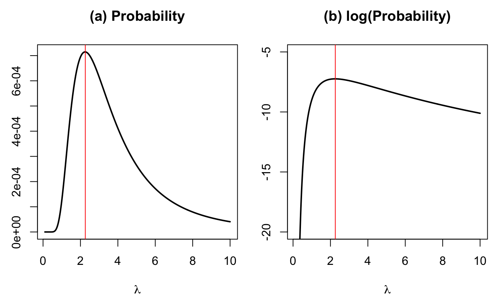
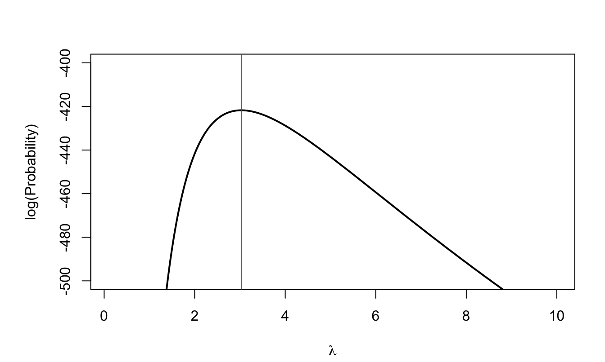
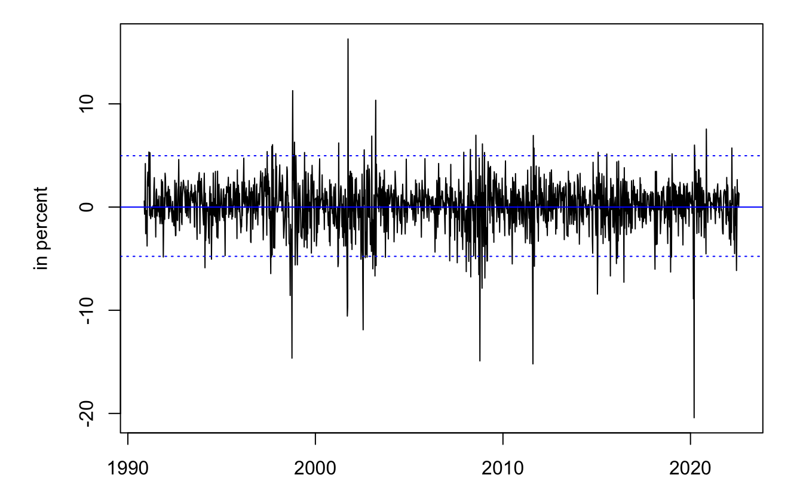
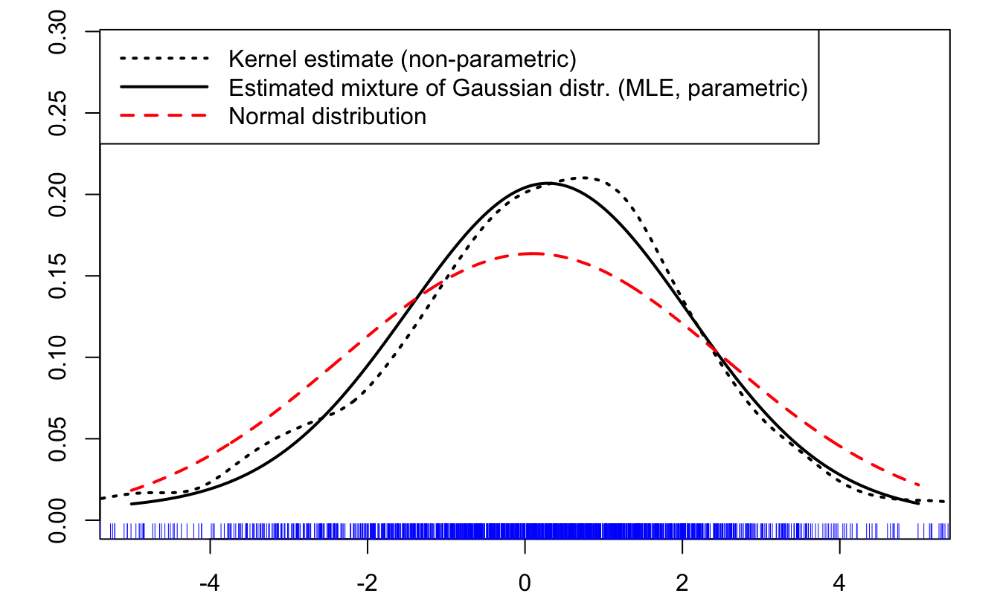
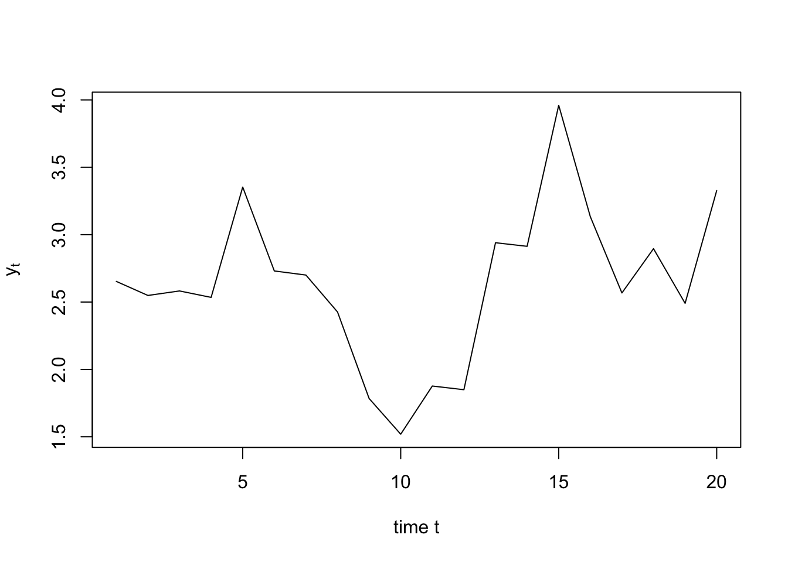
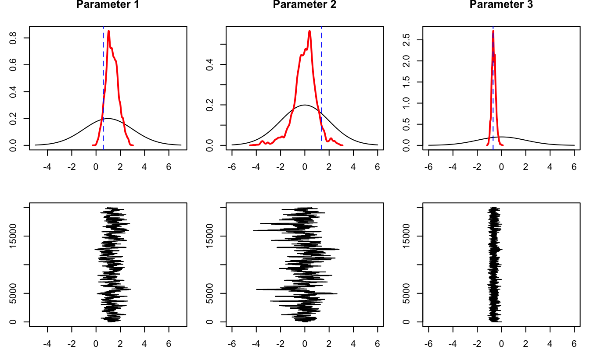

Chapter 6 Estimation methods
This chapter presents three approaches to estimating parametric models: the Generalized Method of Moments (GMM), maximum likelihood (ML), and Bayesian inference. The general context is the following: you observe a sample \(\mathbf{y}=\{y_1,\dots,y_n\}\), assume that the data have been generated by a model parameterized by \({\boldsymbol\theta} \in \mathbb{R}^K\), and seek to estimate its true value \({\boldsymbol\theta}_0\).
Prerequisites. Probability densities, expectations, matrix algebra, optimization, the central limit theorem, and statistical testing.
After working through this chapter, you should be able to:
- Construct a GMM criterion from population moment conditions.
- Explain identification, weighting, efficient GMM, and overidentification tests.
- Form a likelihood, compute a score and information matrix, and derive an MLE.
- Use likelihood-based methods for estimation and testing.
- Combine a prior distribution with a likelihood and interpret the posterior distribution.
- Explain the role of simulation in Bayesian computation.
Roadmap. The chapter develops GMM first, maximum likelihood second, and Bayesian inference third. These approaches share an emphasis on an explicit statistical model but differ in the information they use and the uncertainty they report. Section 6.5 compares them in applications.
6.1 Generalized Method of Moments (GMM)
GMM begins with implications of the model that can be written as population moment conditions. Estimation chooses parameter values that make their sample analogues as close to zero as possible. This perspective includes many familiar estimators and does not require a complete distributional specification.
6.1.1 Definition of the GMM estimator
Let \(y_i\) be a \(p\times1\) vector of variables, \(\boldsymbol\theta\) a \(K\times1\) parameter vector, and \(h(y_i;\boldsymbol\theta)\) a continuous \(r\times1\) vector-valued function.
We denote by \(\boldsymbol\theta_0\) the true value of \(\boldsymbol\theta\) and we assume that \(\boldsymbol\theta_0\) satisfies: \[ \mathbb{E}[h(y_i;\boldsymbol\theta_0)] = \mathbf{0}. \]
We denote by \(\underline{y_i}\) the information contained in the current and past observations of \(y_i\), that is: \(\underline{y_i} = \{y_i,y_{i-1},\dots,y_1\}\). We denote by \(g(\underline{y_n};\boldsymbol\theta)\) the sample average of the \(h(y_i;\boldsymbol\theta)\) vectors, i.e.: \[ g(\underline{y_n};\boldsymbol\theta) = \frac{1}{n} \sum_{i=1}^{n} h(y_i;\boldsymbol\theta). \]
The GMM estimator chooses \(\boldsymbol\theta\) so that the sample moments are as close as possible to their population target, zero.
Definition 6.1 A GMM estimator of \(\boldsymbol\theta_0\) is given by: \[ \hat{\boldsymbol\theta}_n = \mbox{argmin}_{\boldsymbol\theta} \quad g(\underline{y_n};\boldsymbol\theta)'\, W_n \, g(\underline{y_n};\boldsymbol\theta), \] where \(W_n\) is a positive definite matrix (that may depend on \(\underline{y_n}\)).
In the specific case where \(K = r\) (the dimension of \(\boldsymbol\theta\) is the same as that of \(h(y_i;\boldsymbol\theta)\) —or of \(g(\underline{y_n};\boldsymbol\theta)\)— then \(\hat{\boldsymbol\theta}_n\) satisfies: \[ g(\underline{y_n};\hat{\boldsymbol\theta}_n) = \mathbf{0}. \] Under regularity and identification conditions, this estimator is consistent, that is \(\hat{\boldsymbol\theta}_{n}\) converges towards \(\boldsymbol\theta_0\) in probability, which we denote by: \[\begin{equation} \mbox{plim}_n\;\hat{\boldsymbol\theta}_{n}= \boldsymbol\theta_0,\quad \mbox{or} \quad\hat{\boldsymbol\theta}_{n} \overset{p}{\rightarrow} \boldsymbol\theta_0,\tag{6.1} \end{equation}\] i.e. \(\forall \varepsilon>0\), \(\lim_{n \rightarrow \infty} \mathbb{P}(|\hat{\boldsymbol\theta}_{n} - \boldsymbol\theta_0|>\varepsilon) = 0\) (this is Definition 9.16).
Definition 6.1 involves a positive definite matrix \(W_n\). Under the required identification and regularity conditions, any sequence of positive definite weighting matrices converging to a positive definite limit yields consistency. The GMM estimator achieves the minimum asymptotic variance when \(W_n\) converges to the inverse of matrix \(S\), defined by: \[ S = Asy.\mathbb{V}ar\left(\sqrt{n}g(\underline{y_n};\boldsymbol\theta_0)\right). \] In this case, \(W_n\) is said to be the optimal weighting matrix.
The intuition behind this result is the same that underlies Generalized Least Squares (see Section 4.5.2), that is: it is beneficial to use a criterion in which the weights are inversely proportional to the variances of the moments.
If \(h(x_i;\boldsymbol\theta_0)\) is not correlated to \(h(x_j;\boldsymbol\theta_0)\), for \(i \ne j\), then we have: \[ S = \mathbb{V}ar(h(x_i;\boldsymbol\theta_0)), \] which can be approximated by \[ \hat{\Gamma}_{0,n}=\frac{1}{n}\sum_{i=1}^{n} h(x_i;\hat{\boldsymbol\theta}_n)h(x_{i};\hat{\boldsymbol\theta}_n)'. \]
In a time series context, we often have correlation between \(x_i\) and \(x_{i+k}\), especially for small \(k\)’s. In this case, and if the time series \(\{y_i\}\) is covariance stationary (see Def. 8.4), then we have: \[ S := \sum_{\nu = -\infty}^{\infty} \Gamma_\nu, \] where \(\Gamma_\nu := \mathbb{E}[h(x_i;\boldsymbol\theta_0) h(x_{i-\nu};\boldsymbol\theta_0)']\). Matrix \(S\) is called the long-run variance of process \(\{y_i\}\) (see Def. 8.9).
For \(\nu \ge 0\), let us define \(\hat{\Gamma}_{\nu,n}\) by: \[ \hat{\Gamma}_{\nu,n} = \frac{1}{n} \sum_{i=\nu + 1}^{n} h(x_i;\hat{\boldsymbol\theta}_n)h(x_{i-\nu};\hat{\boldsymbol\theta}_n)', \] then \(S\) can be approximated by the Newey and West (1987) formula (similar to Eq. (8.6)): \[\begin{equation} \hat{\Gamma}_{0,n} + \sum_{\nu=1}^{q}\left[1-\frac{\nu}{q+1}\right](\hat{\Gamma}_{\nu,n}+\hat{\Gamma}_{\nu,n}'). \tag{6.2} \end{equation}\]
6.1.2 Asymptotic distribution of the GMM estimator
We have: \[\begin{equation} \boxed{\sqrt{n}(\hat{\boldsymbol\theta}_n - \boldsymbol\theta_0) \overset{d}{\rightarrow} \mathcal{N}(0,V),}\tag{6.3} \end{equation}\] where \(V = (D'S^{-1}D)^{-1}\), with \[ D := \left.\mathbb{E}\left(\frac{\partial h(x_i;\boldsymbol\theta)}{\partial \boldsymbol\theta'}\right)\right|_{\boldsymbol\theta = \boldsymbol\theta_0}. \]
Matrix \(V\) can be approximated by \[\begin{equation} \hat{V}_n = (\hat{D}_n'\hat{S}_n^{-1}\hat{D}_n)^{-1},\tag{6.4} \end{equation}\] where \(\hat{S}_n\) is given by Eq. (6.2) and \[ \hat{D}_n := \left.\frac{\partial g(\underline{y_n};\boldsymbol\theta)}{\partial \boldsymbol\theta'}\right|_{\boldsymbol\theta = \hat{\boldsymbol\theta}_n}. \] In practice, the previous matrix is computed numerically.
6.1.3 Testing hypotheses in the GMM framework
A first important test is the one concerning the validity of the moment restrictions (Sargan-Hansen test; Sargan (1958) and Hansen (1982)). Assume that the number of restrictions imposed is larger than the number of parameters to estimate (\(r>K\)). In this case, the restrictions are said to be over-identifiying.
Under correct specification, we asymptotically have: \[ \sqrt{n}g(\underline{y_n};{\boldsymbol\theta}_0) \overset{a}{\sim} \mathcal{N}(0,S). \] As a result, it comes that: \[\begin{equation} J_n = n\,g(\underline{y_n};\hat{\boldsymbol\theta}_n)'\hat S_n^{-1}g(\underline{y_n};\hat{\boldsymbol\theta}_n) \tag{6.5} \end{equation}\] asymptotically follows a \(\chi^2\) distribution. The number of degrees of freedom is equal to \(r-K\). (Note that, for \(r=K\), we have, as expected, \(J=0\).) That is, asymptotically: \[ J_n \sim \chi^2(r-K). \] The GMM framework also supports tests of parameter restrictions. Equation (6.3) leads directly to Wald tests (see Eq. (4.13) in Section 4.2.5). A criterion-difference test provides an analogue of the likelihood-ratio test in Definition 6.8. Consider an unrestricted model and a version imposing \(k\) restrictions. If both use the same moment conditions and the same weighting matrix, computed from the unrestricted model using Eq. (6.4), then \[ n\left[Q_n(\hat{{\boldsymbol\theta}}^*_n)-Q_n(\hat{{\boldsymbol\theta}}_n)\right]\overset{d}{\rightarrow}\chi^2(k), \] where \(Q_n(\boldsymbol\theta)=g(\underline{y_n};\boldsymbol\theta)'W_n g(\underline{y_n};\boldsymbol\theta)\) and \(\hat{{\boldsymbol\theta}}^*_n\) is the constrained estimate of \({\boldsymbol\theta}_0\).
6.1.4 Example: Estimation of the Stochastic Discount Factor (s.d.f.)
Under the no-arbitrage assumption, there exists a random variable \(\mathcal{M}_{t,t+1}\) (a s.d.f.) such that \[ \mathbb{E}_t(\mathcal{M}_{t,t+1}R_{t+1})=1 \] for any (gross) asset return \(R_{t+1}\). In the following, \(R_{t+1}\) denotes an \(n_r\)-dimensional vector of gross returns between dates \(t\) and \(t+1\).
We consider the following specification of the s.d.f.: \[\begin{equation} \mathcal{M}_{t,t+1} = 1 - \textbf{b}_M'(F_{t+1} - \mathbb{E}_t(F_{t+1})), \tag{6.6} \end{equation}\] where \(F_t\) is a vector of factors. Eq. (6.6) then reads: \[ \mathbb{E}_t([1 - \textbf{b}_M'(F_{t+1} - \mathbb{E}_t(F_{t+1}))]R_{t+1})=1. \]
Assume that the date-\(t\) information set is \(\mathcal{I}_t=\{\textbf{z}_t,\mathcal{I}_{t-1}\}\), where \(\textbf{z}_t\) is a vector of variables observed on date \(t\). (We then have \(\mathbb{E}_t(\bullet) \equiv \mathbb{E}(\bullet|\mathcal{I}_t)\).)
We can use \(\textbf{z}_t\) as an instrument. Indeed, we have: \[\begin{eqnarray} &&\mathbb{E}(z_{i,t} [\textbf{b}_M'\{F_{t+1} - \mathbb{E}_t(F_{t+1})\}R_{t+1}-R_{t+1}+1]) \nonumber \\ &=&\mathbb{E}(\mathbb{E}_t\{z_{i,t} [\textbf{b}_M'\{F_{t+1} - \mathbb{E}_t(F_{t+1})\}R_{t+1}-R_{t+1}+1]\})\nonumber\\ &=&\mathbb{E}(z_{i,t} \underbrace{\mathbb{E}_t\{\textbf{b}_M'\{F_{t+1} - \mathbb{E}_t(F_{t+1})\}R_{t+1}-R_{t+1}+1\}}_{1 - \mathbb{E}_t(\mathcal{M}_{t,t+1}R_{t+1})=0})=0.\tag{6.7} \end{eqnarray}\] We have then converted a conditional moment condition into a unconditional one (which we need to implement the GMM approach described above). However, at that stage, we can still not directly use the GMM formulas because of the conditional expectation \(\mathbb{E}_t(F_{t+1})\) that appears in \(\mathbb{E}(z_{i,t} [\textbf{b}_M'\{F_{t+1} - \mathbb{E}_t(F_{t+1})\}R_{t+1}-R_{t+1}+1])=0\).
To go further, let us assume that: \[ \mathbb{E}_t(F_{t+1}) = \textbf{b}_F \textbf{z}_t. \] We can then easily estimate matrix \(\textbf{b}_F\) (of dimension \(n_F \times n_z\)) by OLS. Note here that these OLS can be seen as a special GMM case. Indeed, as was done in Eq. (6.7), we can show that, for the \(j^{th}\) component of \(F_t\), we have: \[ \mathbb{E}( [F_{j,t+1} - \textbf{b}_{F,j} \textbf{z}_t]\textbf{z}_{t})=0, \] where \(\textbf{b}_{F,j}\) denotes the \(j^{th}\) row of \(\textbf{b}_{F}\). This yields the OLS formula.
Equipped with \(\textbf{b}_F\), we rely on the following moment restrictions to estimate \(\textbf{b}_M\):
\[
\mathbb{E}(z_{i,t} [\textbf{b}_M'\{F_{t+1} - \textbf{b}_F \textbf{z}_t\}R_{t+1}-R_{t+1}+1])=0.
\]
Specifically, the number of restrictions is \(n_R \times n_z\). Let us implement this approach in the U.S. context, using data extracted from the FRED database. In factor \(F_t\), we use the changes in the VIX and in the personal consumption expenditures. The returns (\(R_t\)) are based on the OECD share-price index for the United States (SPASTT01USM661N) and on the ICE BofA BBB US Corporate Index Total Return Index (a bond return index).
Historical data required. The numerical results below require the archived monthly 1990–2022 snapshot. FRED now limits the ICE bond series to three years of history, so this analysis is not executed without the historical data. See the repository README for the snapshot format.
Code
gmm_data <- read_gmm_data(gmm_path)
vix <- data.frame(value=gmm_data$VIXCLS)
pce <- data.frame(value=gmm_data$PCE)
sto <- data.frame(value=gmm_data$SPASTT01USM661N)
bdr <- data.frame(value=gmm_data$BAMLCC0A4BBBTRIV)
T <- dim(vix)[1]
dvix <- c(vix$value[3:T]/vix$value[2:(T-1)]) # change in VIX t+1
dpce <- c(pce$value[3:T]/pce$value[2:(T-1)]) # change in PCE t+1
dsto <- c(sto$value[3:T]/sto$value[2:(T-1)]) # return t+1
dbdr <- c(bdr$value[3:T]/bdr$value[2:(T-1)]) # return t+1
dvix_1 <- c(vix$value[2:(T-1)]/vix$value[1:(T-2)]) # change in VIX t
dpce_1 <- c(pce$value[2:(T-1)]/pce$value[1:(T-2)]) # change in PCE t
dsto_1 <- c(sto$value[2:(T-1)]/sto$value[1:(T-2)]) # return t
dbdr_1 <- c(bdr$value[2:(T-1)]/bdr$value[1:(T-2)]) # return tDefine the matrices containing the \(F_{t+1}\), \(\textbf{z}_t\), and \(R_{t+1}\) vectors:
Code
Function f_aux compute the \(h(x_t;{\boldsymbol\theta})\) and the \(g(\underline{y_T};{\boldsymbol\theta})\); function f2beMin is the function to be minimized.
Code
f_aux <- function(theta){
b_M <- matrix(theta[1:n_F],ncol=1)
R_aux <- matrix(F_innov %*% b_M,T-2,n_R) * R_tp1 - R_tp1 + 1
H <- (R_aux %x% matrix(1,1,n_z)) * (matrix(1,1,n_R) %x% Z)
g <- matrix(apply(H,2,mean),ncol=1)
return(list(g=g,H=H))
}
f2beMin <- function(theta,W){# function to be minimized
res <- f_aux(theta)
return(t(res$g) %*% W %*% res$g)
}Now, let’s minimize this function, using use the BFGS numerical algorithm (part of the optim wrapper). We run 10 iterations (where \(W\) is updated).
Code
Finally, let’s compute the standard deviation of the parameter estimates, using Eq. (6.4):
Code
eps <- .0001
g0 <- f_aux(theta)$g
D <- NULL
for(i in 1:length(theta)){
theta.i <- theta
theta.i[i] <- theta.i[i] + eps
gi <- f_aux(theta.i)$g
D <- cbind(D,(gi-g0)/eps)
}
n_gmm <- nrow(F_tp1) # two initial months are used to construct lagged ratios
V <- 1/n_gmm * solve(t(D) %*% W %*% D)
std.dev <- sqrt(diag(V));t.stud <- theta/std.dev
data_table(cbind(Estimate=theta, SE=std.dev, "t statistic"=t.stud), digits=4)The Hansen statistic can be used to test the model (see Eq. (6.5)). If the model is correct, we have: \[ T g(\underline{y_T};\hat{\boldsymbol\theta})'\, \hat S^{-1} \, g(\underline{y_T};\hat{\boldsymbol\theta}) \overset{d}{\rightarrow}\chi^2(J - K), \] where \(J\) is the number of moment constraints (\(n_z \times n_r\) here) and \(K\) is the number of estimated parameters (\(=n_F\) here).
6.2 Maximum likelihood estimation
GMM uses selected moment implications of a model. Maximum likelihood uses the full probability model: it asks which parameter value makes the observed sample most probable. We begin with this intuition and then establish the estimator’s formal properties.
6.2.1 Intuition
Intuitively, the Maximum Likelihood Estimation (MLE) consists in looking for the value of \({\boldsymbol\theta}\) that is such that the probability of having observed \(\mathbf{y}\) (the sample at hand) is the highest possible.
To set an example, assume that the time periods between the arrivals of two customers in a shop, denoted by \(y_i\), are i.i.d. and follow an exponential distribution, i.e. \(y_i \sim \,i.i.d.\, \mathcal{E}(\lambda)\). You have observed these arrivals for some time, thereby constituting a sample \(\mathbf{y}=\{y_1,\dots,y_n\}\). You want to estimate \(\lambda\) (i.e. in that case, the vector of parameters is simply \({\boldsymbol\theta} = \lambda\)).
We use the scale parametrization: \(\lambda>0\) is both the mean and the scale. The density of \(Y\) is \(f(y;\lambda) = \dfrac{1}{\lambda}\exp(-y/\lambda)\) for \(y\ge0\). Fig. 6.1 represents such density functions for different values of \(\lambda\).
Your 200 observations are reported at the bottom of Fig. 6.1 (red bars). You build the histogram and display it on the same chart.

Figure 6.1: The red ticks, at the bottom, indicate observations (there are 200 of them). The historgram is based on these 200 observations
What is your estimate of \(\lambda\)? Intuitively, one is led to take the \(\lambda\) for which the (theoretical) distribution is the closest to the histogram (that can be seen as an “empirical distribution”). This approach is consistent with the idea of picking the \(\lambda\) for which the probability of observing the values included in \(\mathbf{y}\) is the highest.
Let us be more formal. Assume that you have only four observations: \(y_1=1.1\), \(y_2=2.2\), \(y_3=0.7\) and \(y_4=5.0\). What was the probability of jointly observing:
- \(1.1-\varepsilon \le Y_1 < 1.1+\varepsilon\),
- \(2.2-\varepsilon \le Y_2 < 2.2+\varepsilon\),
- \(0.7-\varepsilon \le Y_3 < 0.7+\varepsilon\), and
- \(5.0-\varepsilon \le Y_4 < 5.0+\varepsilon\)?
Because the \(y_i\)’s are i.i.d., this probability is \(\prod_{i=1}^4(2\varepsilon f(y_i,\lambda))\). The next plot shows the probability (divided by \(16\varepsilon^4\), which does not depend on \(\lambda\)) as a function of \(\lambda\).

Figure 6.2: Proba. that \(y_i-\varepsilon \le Y_i < y_i+\varepsilon\), \(i \in \{1,2,3,4\}\). The vertical red line indicates the maximum of the function.
The value of \(\lambda\) that maximizes the probability is 2.26.
Let us come back to the example with 200 observations:

Figure 6.3: Log-likelihood function associated with the 200 i.i.d. observations. The vertical red line indicates the maximum of the function.
In that case, the value of \(\lambda\) that maxmimizes the probability is 3.04.
6.2.2 Definition and properties
\(f(y;\boldsymbol\theta)\) denotes the probability density function (p.d.f.) of a random variable \(Y\) which depends on a set of parameters \(\boldsymbol\theta\). The density of \(n\) independent and identically distributed (i.i.d.) observations of \(Y\) is given by: \[ f(\mathbf{y};\boldsymbol\theta) = \prod_{i=1}^n f(y_i;\boldsymbol\theta), \] where \(\mathbf{y}\) denotes the vector of observations; \(\mathbf{y} = \{y_1,\dots,y_n\}\).
Definition 6.2 (Likelihood function) The likelihood function is: \[ \mathcal{L}: \boldsymbol\theta \rightarrow \mathcal{L}(\boldsymbol\theta;\mathbf{y})=f(\mathbf{y};\boldsymbol\theta)=f(y_1,\dots,y_n;\boldsymbol\theta). \]
We often work with \(\log \mathcal{L}\), the log-likelihood function.
Example 6.1 (Gaussian distribution) If \(y_i \sim \,i.i.d.\, \mathcal{N}(\mu,\sigma^2)\), then \[ \log \mathcal{L}(\boldsymbol\theta;\mathbf{y}) = - \frac{1}{2}\sum_{i=1}^n\left( \log \sigma^2 + \log 2\pi + \frac{(y_i-\mu)^2}{\sigma^2} \right). \]
Definition 6.3 (Score) The score \(S(y;\boldsymbol\theta)\) is given by \(\frac{\partial \log f(y;\boldsymbol\theta)}{\partial \boldsymbol\theta}\).
If \(y_i \sim \mathcal{N}(\mu,\sigma^2)\), and using \(\boldsymbol\theta=[\mu,\sigma^2]'\) (Example 6.1), then \[ \frac{\partial \log f(y;\boldsymbol\theta)}{\partial \boldsymbol\theta} = \left[\begin{array}{c} \dfrac{\partial \log f(y;\boldsymbol\theta)}{\partial \mu}\\ \dfrac{\partial \log f(y;\boldsymbol\theta)}{\partial \sigma^2} \end{array}\right] = \left[\begin{array}{c} \dfrac{y-\mu}{\sigma^2}\\ \frac{1}{2\sigma^2}\left(\frac{(y-\mu)^2}{\sigma^2}-1\right) \end{array}\right]. \]
Proposition 6.1 (Score expectation) If differentiation can be passed under the integral sign and the support of \(Y\) does not depend on \(\boldsymbol\theta\), the expectation of the score is zero.
Proof. We have: \[\begin{eqnarray*} \mathbb{E}\left(\frac{\partial \log f(Y;\boldsymbol\theta)}{\partial \boldsymbol\theta}\right) &=& \int \frac{\partial \log f(y;\boldsymbol\theta)}{\partial \boldsymbol\theta} f(y;\boldsymbol\theta) dy \\ &=& \int \frac{\partial f(y;\boldsymbol\theta)/\partial \boldsymbol\theta}{f(y;\boldsymbol\theta)} f(y;\boldsymbol\theta) dy = \frac{\partial}{\partial \boldsymbol\theta} \int f(y;\boldsymbol\theta) dy\\ &=&\partial 1 /\partial \boldsymbol\theta = 0, \end{eqnarray*}\] which gives the result.
Definition 6.4 (Fisher information matrix) The information matrix is (minus) the the expectation of the second derivatives of the log-likelihood function: \[ \mathcal{I}_Y(\boldsymbol\theta) = - \mathbb{E} \left( \frac{\partial^2 \log f(Y;\boldsymbol\theta)}{\partial \boldsymbol\theta \partial \boldsymbol\theta'} \right). \]
Proposition 6.2 (Information equality) Under the same regularity conditions used for the score identity, we have \[ \mathcal{I}_Y(\boldsymbol\theta) = \mathbb{E} \left[ \left( \frac{\partial \log f(Y;\boldsymbol\theta)}{\partial \boldsymbol\theta} \right) \left( \frac{\partial \log f(Y;\boldsymbol\theta)}{\partial \boldsymbol\theta} \right)' \right] = \mathbb{V}ar[S(Y;\boldsymbol\theta)]. \]
Proof. We have \(\frac{\partial^2 \log f(Y;\boldsymbol\theta)}{\partial \boldsymbol\theta \partial \boldsymbol\theta'} = \frac{\partial^2 f(Y;\boldsymbol\theta)}{\partial \boldsymbol\theta \partial \boldsymbol\theta'}\frac{1}{f(Y;\boldsymbol\theta)} - \frac{\partial \log f(Y;\boldsymbol\theta)}{\partial \boldsymbol\theta}\frac{\partial \log f(Y;\boldsymbol\theta)}{\partial \boldsymbol\theta'}\). The expectation of the first right-hand side term is \(\partial^2 1 /(\partial \boldsymbol\theta \partial \boldsymbol\theta') = \mathbf{0}\), which gives the result.
Example 6.2 If \(y_i \sim\,i.i.d.\, \mathcal{N}(\mu,\sigma^2)\), let \(\boldsymbol\theta = [\mu,\sigma^2]'\) then \[ \frac{\partial \log f(y;\boldsymbol\theta)}{\partial \boldsymbol\theta} = \left[\frac{y-\mu}{\sigma^2} \quad \frac{1}{2\sigma^2}\left(\frac{(y-\mu)^2}{\sigma^2}-1\right) \right]', \] and \[ \mathcal{I}_Y(\boldsymbol\theta) = \mathbb{E}\left( \frac{1}{\sigma^4} \left[ \begin{array}{cc} \sigma^2&y-\mu\\ y-\mu & \frac{(y-\mu)^2}{\sigma^2}-\frac{1}{2} \end{array}\right] \right)= \left[ \begin{array}{cc} 1/\sigma^2&0\\ 0 & 1/(2\sigma^4) \end{array}\right]. \]
Proposition 6.3 (Additive property of the Information matrix) The information matrix resulting from two independent experiments is the sum of the information matrices: \[ \mathcal{I}_{X,Y}(\boldsymbol\theta) = \mathcal{I}_X(\boldsymbol\theta) + \mathcal{I}_Y(\boldsymbol\theta). \]
Proof. Directly deduced from the definition of the information matrix (Def. 6.4), using that the expectation of a product of independent variables is the product of the expectations.
Theorem 6.1 (Frechet-Darmois-Cramer-Rao bound) Consider an unbiased estimator of \(\boldsymbol\theta\) denoted by \(\hat{\boldsymbol\theta}(Y)\). The variance of the random variable \(\boldsymbol\omega'\hat{\boldsymbol\theta}\) (which is a linear combination of the components of \(\hat{\boldsymbol\theta}\)) is larger than: \[ \boldsymbol\omega'\mathcal{I}_Y(\boldsymbol\theta)^{-1}\boldsymbol\omega, \] provided the information matrix is nonsingular and the usual regularity conditions hold.
Proof. Unbiasedness and differentiation under the integral imply \(\mathbb{C}ov[\hat{\boldsymbol\theta}(Y),S(Y;\boldsymbol\theta)]=Id\). The matrix covariance inequality then gives \(\mathbb{V}ar(\hat{\boldsymbol\theta})\succeq\mathcal{I}_Y(\boldsymbol\theta)^{-1}\). Premultiplying and postmultiplying by \(\boldsymbol\omega'\) and \(\boldsymbol\omega\) gives the stated scalar bound.
Definition 6.5 (Identifiability) The vector of parameters \(\boldsymbol\theta\) is identifiable if two distinct parameter values cannot generate the same probability distribution. In a model described by densities, this means that for any \(\boldsymbol\theta^*\ne\boldsymbol\theta\): \[ f(\cdot;\boldsymbol\theta^*)\not\equiv f(\cdot;\boldsymbol\theta). \]
Definition 6.6 (Maximum Likelihood Estimator (MLE)) The maximum likelihood estimator (MLE) is the vector \(\boldsymbol\theta\) that maximizes the likelihood function. Formally: \[\begin{equation} \boldsymbol\theta_{MLE} = \arg \max_{\boldsymbol\theta} \mathcal{L}(\boldsymbol\theta;\mathbf{y}) = \arg \max_{\boldsymbol\theta} \log \mathcal{L}(\boldsymbol\theta;\mathbf{y}).\tag{6.8} \end{equation}\]
Definition 6.7 (Likelihood equation) A necessary condition for maximizing the likelihood function (under regularity assumption, see Hypotheses 6.1) is: \[\begin{equation} \dfrac{\partial \log \mathcal{L}(\boldsymbol\theta;\mathbf{y})}{\partial \boldsymbol\theta} = \mathbf{0}. \end{equation}\]
Hypothesis 6.1 (Regularity assumptions) We have:
- \(\boldsymbol\theta \in \Theta\) where \(\Theta\) is compact.
- \(\boldsymbol\theta_0\) is identified.
- The log-likelihood function is continuous in \(\boldsymbol\theta\).
- \(\mathbb{E}_{\boldsymbol\theta_0}(\log f(Y;\boldsymbol\theta))\) exists.
- The log-likelihood function is such that \((1/n)\log\mathcal{L}(\boldsymbol\theta;\mathbf{y})\) converges almost surely to \(\mathbb{E}_{\boldsymbol\theta_0}(\log f(Y;\boldsymbol\theta))\), uniformly in \(\boldsymbol\theta \in \Theta\).
- The log-likelihood function is twice continuously differentiable in an open neighborhood of \(\boldsymbol\theta_0\).
- The matrix \(\mathbf{I}(\boldsymbol\theta_0) = - \mathbb{E}_0 \left( \frac{\partial^2 \log \mathcal{L}(\boldsymbol\theta;\mathbf{y})}{\partial \boldsymbol\theta \partial \boldsymbol\theta'}\right)\) —the Fisher Information matrix— exists and is nonsingular.
Proposition 6.4 (Properties of MLE) Under regularity conditions (Assumptions 6.1), the MLE is:
- Consistent: \(\mbox{plim}\; \boldsymbol\theta_{MLE} = {\boldsymbol\theta}_0\) (\({\boldsymbol\theta}_0\) is the true vector of parameters).
- Asymptotically normal: \[\begin{equation} \boxed{\sqrt{n}(\boldsymbol\theta_{MLE} - \boldsymbol\theta_{0}) \overset{d}{\rightarrow} \mathcal{N}(0,\mathcal{I}_Y(\boldsymbol\theta_0)^{-1}).} \tag{6.9} \end{equation}\]
- Asymptotically efficient: \(\boldsymbol\theta_{MLE}\) is asymptotically efficient and achieves the Frechet-Darmois-Cramer-Rao lower bound for consistent estimators.
- Invariant: The MLE of \(g(\boldsymbol\theta_0)\) is \(g(\boldsymbol\theta_{MLE})\) if \(g\) is a continuous and continuously differentiable function.
Proof. See Appendix 9.5.
Since \(\mathcal{I}_Y(\boldsymbol\theta_0)=\frac{1}{n}\mathbf{I}(\boldsymbol\theta_0)\), the asymptotic covariance matrix of the MLE is \([\mathbf{I}(\boldsymbol\theta_0)]^{-1}\), that is: \[ [\mathbf{I}(\boldsymbol\theta_0)]^{-1} = \left[- \mathbb{E}_0 \left( \frac{\partial^2 \log \mathcal{L}(\boldsymbol\theta;\mathbf{y})}{\partial \boldsymbol\theta \partial \boldsymbol\theta'}\right) \right]^{-1}. \] A direct (analytical) evaluation of this expectation is often out of reach. It can however be estimated by, either: \[\begin{eqnarray} \hat{\mathbf{I}}_1^{-1} &=& \left( - \frac{\partial^2 \log \mathcal{L}({\boldsymbol\theta_{MLE}};\mathbf{y})}{\partial {\boldsymbol\theta} \partial {\boldsymbol\theta}'}\right)^{-1}, \tag{6.10}\\ \hat{\mathbf{I}}_2^{-1} &=& \left( \sum_{i=1}^n \frac{\partial \log \mathcal{L}({\boldsymbol\theta_{MLE}};y_i)}{\partial {\boldsymbol\theta}} \frac{\partial \log \mathcal{L}({\boldsymbol\theta_{MLE}};y_i)}{\partial {\boldsymbol\theta'}} \right)^{-1}. \tag{6.11} \end{eqnarray}\]
Asymptotically, we have \((\hat{\mathbf{I}}_1^{-1})\hat{\mathbf{I}}_2=Id\), that is, the two formulas provide the same result.
In case of (suspected) misspecification, one can use the so-called sandwich estimator of the covariance matrix.11 This covariance matrix is given by: \[\begin{equation} \hat{\mathbf{I}}_3^{-1} = \hat{\mathbf{I}}_1^{-1} \hat{\mathbf{I}}_2 \hat{\mathbf{I}}_1^{-1}.\tag{6.12} \end{equation}\]
6.2.3 MLE in practice
To implement MLE, we need:
- A parametric model (depending on the vector of parameters \(\boldsymbol\theta\) whose “true” value is \(\boldsymbol\theta_0\)) is specified.
- i.i.d. sources of randomness are identified.
- The density associated to one observation \(y_i\) is computed analytically (as a function of \(\boldsymbol\theta\)): \(f(y;\boldsymbol\theta)\).
- The log-likelihood is \(\log \mathcal{L}(\boldsymbol\theta;\mathbf{y}) = \sum_i \log f(y_i;\boldsymbol\theta)\).
- The MLE estimator results from the optimization problem (this is Eq. (6.8)): \[\begin{equation} \boldsymbol\theta_{MLE} = \arg \max_{\boldsymbol\theta} \log \mathcal{L}(\boldsymbol\theta;\mathbf{y}). \end{equation}\]
- In large samples, \(\boldsymbol\theta_{MLE} \overset{a}{\sim} \mathcal{N}({\boldsymbol\theta}_0,\mathbf{I}(\boldsymbol\theta_0)^{-1})\), where \(\mathbf{I}(\boldsymbol\theta_0)^{-1}\) is estimated by means of Eq. (6.10), Eq. (6.11), or Eq. (6.12). Most of the time, this computation is numerical.
6.2.4 Example: MLE estimation of a Gaussian mixture
Consider the returns of the Swiss Market Index (SMI). Assume that these returns are independently drawn from a mixture of Gaussian distributions. The p.d.f. \(f(x;\boldsymbol\theta)\), with \(\boldsymbol\theta = [\mu_1,\mu_2,\sigma_1,\sigma_2,p]'\), is given by: \[ p \frac{1}{\sqrt{2\pi\sigma_1^2}}\exp\left(-\frac{(x - \mu_1)^2}{2\sigma_1^2}\right) + (1-p)\frac{1}{\sqrt{2\pi\sigma_2^2}}\exp\left(-\frac{(x - \mu_2)^2}{2\sigma_2^2}\right). \] (See p.d.f. of mixtures of Gaussian distributions.)
The density is unchanged if the two components are relabelled. Thus, without a labelling convention such as \(\mu_1\le\mu_2\), the parameter vector is identified only up to permutation of the component labels. Numerical optimization may select either labelling.
Code
library(AEC);data(smi)
T <- dim(smi)[1]
h <- 5 # holding period (one week)
smi$r <- c(rep(NaN,h),
100*c(log(smi$Close[(1+h):T]/smi$Close[1:(T-h)])))
indic.dates <- seq(1,T,by=5) # weekly returns
smi <- smi[indic.dates,]
smi <- smi[complete.cases(smi),]
par(mfrow=c(1,1));par(plt=c(.15,.95,.1,.95))
plot(smi$Date,smi$r,type="l",xlab="",ylab="in percent")
abline(h=0,col="blue")
abline(h=mean(smi$r,na.rm = TRUE)+2*sd(smi$r,na.rm = TRUE),lty=3,col="blue")
abline(h=mean(smi$r,na.rm = TRUE)-2*sd(smi$r,na.rm = TRUE),lty=3,col="blue")
Figure 6.4: Time series of SMI weekly returns (source: Yahoo Finance).
Build the log-likelihood function (fucntion log.f), and use the numerical BFGS algorithm to maximize it (using the optim wrapper):
Code
f <- function(theta,y){ # Likelihood function
mu.1 <- theta[1]; mu.2 <- theta[2]
sigma.1 <- exp(theta[3]); sigma.2 <- exp(theta[4])
p <- exp(theta[5])/(1+exp(theta[5]))
res <- p*1/sqrt(2*pi*sigma.1^2)*exp(-(y-mu.1)^2/(2*sigma.1^2)) +
(1-p)*1/sqrt(2*pi*sigma.2^2)*exp(-(y-mu.2)^2/(2*sigma.2^2))
return(res)
}
log.f <- function(theta,y){ #log-Likelihood function
return(-sum(log(f(theta,y))))
}
res.optim <- optim(c(0,0,log(0.5),log(1.5),.5),
log.f,
y=smi$r,
method="BFGS", # could be "Nelder-Mead"
control=list(trace=FALSE,maxit=100),hessian=TRUE)
theta <- res.optim$par
theta## [1] 0.3011448 -1.3171034 0.5718777 1.5730684 1.9458617Next, compute estimates of the covariance matrix of the MLE (using Eqs. (6.10), (6.11), and (6.12)), and compare the three sets of resulting standard deviations for the five estimated paramters:
Code
# Hessian approach:
I.1 <- solve(res.optim$hessian)
# Outer-product of gradient approach:
log.f.0 <- log(f(theta,smi$r))
epsilon <- .00000001
d.log.f <- NULL
for(i in 1:length(theta)){
theta.i <- theta
theta.i[i] <- theta.i[i] + epsilon
log.f.i <- log(f(theta.i,smi$r))
d.log.f <- cbind(d.log.f,
(log.f.i - log.f.0)/epsilon)
}
I.2 <- solve(t(d.log.f) %*% d.log.f)
# Misspecification-robust approach (sandwich formula):
I.3 <- I.1 %*% solve(I.2) %*% I.1
data_table(cbind(Hessian=diag(I.1), OPG=diag(I.2),
Sandwich=diag(I.3)), digits=6)| Hessian | OPG | Sandwich |
|---|---|---|
| 0.003683 | 0.003199 | 0.005865 |
| 0.227128 | 0.194561 | 0.387129 |
| 0.001837 | 0.000882 | 0.005463 |
| 0.008374 | 0.002046 | 0.035897 |
| 0.092177 | 0.040365 | 0.314050 |
According to the first (respectively third) type of estimate for the covariance matrix, a 95% confidence interval for \(\mu_1\) is [0.182, 0.42] (resp. [0.151, 0.451]).
We estimated \(\log(\sigma_1)\) and \(\log(\sigma_2)\) rather than the standard deviations themselves, which enforces \(\sigma_1,\sigma_2>0\). Similarly, we estimated \(\nu=\log(p/(1-p))\) rather than \(p\), so that \(p=\exp(\nu)/(1+\exp(\nu))\) always lies in \((0,1)\). To obtain standard errors for the transformed parameters, we use the Delta method. For a differentiable function \(g\) and large \(n\), we have: \[\begin{equation} \mathbb{V}ar(g(\hat{\boldsymbol\theta}_n)) \approx \frac{\partial g(\hat{\boldsymbol\theta}_n)}{\partial \boldsymbol\theta'}\mathbb{V}ar(\hat{\boldsymbol\theta}_n)\frac{\partial g(\hat{\boldsymbol\theta}_n)'}{\partial \boldsymbol\theta}.\tag{6.13} \end{equation}\]
Code
g <- function(theta){
mu.1 <- theta[1]; mu.2 <- theta[2]
sigma.1 <- exp(theta[3]); sigma.2 <- exp(theta[4])
p <- exp(theta[5])/(1+exp(theta[5]))
return(c(mu.1,mu.2,sigma.1,sigma.2,p))
}
# Computation of g's gradient around estimated theta:
eps <- .00001
g.theta <- g(theta)
g.gradient <- NULL
for(i in 1:5){
theta.perturb <- theta
theta.perturb[i] <- theta[i] + eps
g.gradient <- cbind(g.gradient,(g(theta.perturb)-g.theta)/eps)
}
Var <- g.gradient %*% I.3 %*% t(g.gradient)
stdv.g.theta <- sqrt(diag(Var))
stdv.theta <- sqrt(diag(I.3))
data_table(cbind(Estimate=theta, SE=stdv.theta,
"Transformed estimate"=g.theta, "Delta-method SE"=stdv.g.theta),
digits=4)| Estimate | SE | Transformed estimate | Delta-method SE |
|---|---|---|---|
| 0.3011 | 0.0766 | 0.3011 | 0.0766 |
| -1.3171 | 0.6222 | -1.3171 | 0.6222 |
| 0.5719 | 0.0739 | 1.7716 | 0.1309 |
| 1.5731 | 0.1895 | 4.8214 | 0.9135 |
| 1.9459 | 0.5604 | 0.8750 | 0.0613 |
The previous results show that the MLE estimate of \(p\) is 0.8749947, and its standard deviation is approximately equal to 0.0612959.
To finish with, let us draw the estimated parametric p.d.f. (the mixture of Gaussian distribution), and compare it to a non-parametric (kernel-based) estimate of this p.d.f. (using function density):
Code
x <- seq(-5,5,by=.01)
par(plt=c(.1,.95,.1,.95))
plot(x,f(theta,x),type="l",lwd=2,xlab="returns, in percent",ylab="",
ylim=c(0,1.4*max(f(theta,x))))
lines(density(smi$r),type="l",lwd=2,lty=3)
lines(x,dnorm(x,mean=mean(smi$r),sd = sd(smi$r)),col="red",lty=2,lwd=2)
rug(smi$r,col="blue")
legend("topleft",
c("Kernel estimate (non-parametric)",
"Estimated mixture of Gaussian distr. (MLE, parametric)",
"Normal distribution"),
lty=c(3,1,2),lwd=c(2), # line width
col=c("black","black","red"),pt.bg=c(1),pt.cex = c(1),
bg="white",seg.len = 4)
Figure 6.5: Comparison of different estimates of the distribution of returns.
6.2.5 Test procedures
Suppose we want to test the following parameter restrictions: \[\begin{equation} \boxed{H_0: \underbrace{h(\boldsymbol\theta)}_{r \times 1}=0.} \end{equation}\]
In the context of MLE, three tests are largely used:
- Likelihood Ratio (LR) test,
- Wald (W) test,
- Lagrange Multiplier (LM) test.
Here is the rationale behind these three tests:12
- LR: If \(h(\boldsymbol\theta)=0\), then imposing this restriction during the estimation (restricted estimator) should not result in a large decrease in the likelihood function (w.r.t the unrestricted estimation).
- Wald: If \(h(\boldsymbol\theta)=0\), then \(h(\hat{\boldsymbol\theta})\) should not be far from \(0\) (even if these restrictions are not imposed during the MLE).
- LM: If \(h(\boldsymbol\theta)=0\), then the gradient of the likelihood function should be small when evaluated at the restricted estimator.
In terms of implementation, while the LR necessitates to estimate both restricted and unrestricted models, the Wald test requires the estimation of the unrestricted model only, and the LM tests requires the estimation of the restricted model only.
As shown below, the three test statistics associated with these three tests coincide asymptotically. (Therefore, they naturally have the same asymptotic distribution, that are \(\chi^2\).)
Proposition 6.5 (Asymptotic distribution of the Wald statistic) Under regularity conditions (Assumptions 6.1) and under \(H_0: h(\boldsymbol\theta)=0\), the Wald statistic, defined by: \[ \boxed{\xi^W = h(\hat{\boldsymbol\theta})' \mathbb{V}ar[h(\hat{\boldsymbol\theta})]^{-1} h(\hat{\boldsymbol\theta}),} \] where \[\begin{equation} \mathbb{V}ar[h(\hat{\boldsymbol\theta})] = \left(\frac{\partial h(\hat{\boldsymbol\theta})}{\partial \boldsymbol\theta'} \right) \mathbb{V}ar[\hat{\boldsymbol\theta}] \left(\frac{\partial h(\hat{\boldsymbol\theta})'}{\partial \boldsymbol\theta} \right),\tag{6.14} \end{equation}\] is asymptotically \(\chi^2(r)\), where the number of degrees of freedom \(r\) corresponds to the dimension of \(h(\boldsymbol\theta)\). (Note that Eq. (6.14) is the same as the one used in the Delta method, see Eq. (6.13).)
The Wald test, defined by the critical region \[ \{\xi^W \ge \chi^2_{1-\alpha}(r)\}, \] where \(\chi^2_{1-\alpha}(r)\) denotes the quantile of level \(1-\alpha\) of the \(\chi^2(r)\) distribution, has asymptotic level \(\alpha\) and is consistent.13
Proof. See Appendix 9.5.
In practice, in Eq. (6.14), \(\mathbb{V}ar[\hat{\boldsymbol\theta}]\) is replaced by an estimate given, e.g., by Eq. (6.10), Eq. (6.11), or Eq. (6.12).
Proposition 6.6 (Asymptotic distribution of the LM test statistic) Under regularity conditions (Assumptions 6.1) and under \(H_0: h(\boldsymbol\theta)=0\), the LM statistic \[\begin{equation} \boxed{\xi^{LM} = \left(\left.\frac{\partial \log \mathcal{L}(\boldsymbol\theta)}{\partial \boldsymbol\theta'}\right|_{\boldsymbol\theta = \hat{\boldsymbol\theta}^0} \right) [\mathbf{I}(\hat{\boldsymbol\theta}^0)]^{-1} \left(\left.\frac{\partial \log \mathcal{L}(\boldsymbol\theta)}{\partial \boldsymbol\theta }\right|_{\boldsymbol\theta = \hat{\boldsymbol\theta}^0} \right),} \tag{6.15} \end{equation}\] (where \(\hat{\boldsymbol\theta}^0\) is the restricted MLE estimator) is \(\chi^2(r)\).
The test defined by the critical region: \[ \{\xi^{LM} \ge \chi^2_{1-\alpha}(r)\} \] has asymptotic level \(\alpha\) and is consistent (see Defs. 3.2 and 3.3). This test is called Score or Lagrange Multiplier (LM) test.
Proof. See Appendix 9.5.
Definition 6.8 (Likelihood Ratio test statistics) The likelihood ratio associated to a restriction of the form \(H_0: h({\boldsymbol\theta})=0\) is given by: \[ LR = \frac{\mathcal{L}_R(\boldsymbol\theta;\mathbf{y})}{\mathcal{L}_U(\boldsymbol\theta;\mathbf{y})} \quad (\in [0,1]), \] where \(\mathcal{L}_R\) (respectively \(\mathcal{L}_U\)) is the likelihood function that imposes (resp. that does not impose) the restriction. The likelihood ratio test statistic is given by \(-2\log(LR)\), that is: \[ \boxed{\xi^{LR}= 2 (\log\mathcal{L}_U(\boldsymbol\theta;\mathbf{y})-\log\mathcal{L}_R(\boldsymbol\theta;\mathbf{y})).} \]
Proposition 6.7 (Asymptotic equivalence of LR, LM, and Wald tests) Under the null hypothesis \(H_0\), we have, asymptotically: \[ \xi^{LM} = \xi^{LR} = \xi^{W}. \]
Proof. See Appendix 9.5.
6.3 Bayesian approach
GMM and maximum likelihood treat the parameter as fixed and evaluate estimators through repeated samples. Bayesian inference instead represents uncertainty about the parameter with a probability distribution and updates that distribution after observing the data.
6.3.1 Introduction
An excellent introduction to Bayesian methods is proposed by Martin Haugh, 2017.
As suggested by the name of this approach, the starting point is the Bayes formula: \[ \mathbb{P}(A|B) = \frac{\mathbb{P}(A \& B)}{\mathbb{P}(B)}, \] where \(A\) and \(B\) are two “events”. For instance, \(A\) may be: parameter \(\alpha\) (conceived as something stochastic) lies in interval \([a,b]\). Assume that you are interested in the probability of occurrence of \(A\). Without any specific information (or “unconditionally”), this probability if \(\mathbb{P}(A)\). Your evaluation of this probability can only be better if you are provided with any additional form of information. Typically, if the event \(B\) tends to occur simultaneously with \(A\), then knowledge of \(B\) can be useful. The Bayes formula says how this additional information (on \(B\)) can be used to “update” the probability of event \(A\).
Suppose the structure and probability distributions of the data-generating process are known, but their parameter values \(\boldsymbol\theta\) are not. Before observing the sample, uncertainty about these parameters is represented by a prior distribution. Bayes’ formula combines the prior with the likelihood to produce the posterior distribution.14 A particular sample can shift a posterior or even increase uncertainty about some feature relative to the prior; posterior concentration is a large-sample property that requires additional conditions.
Let us formalize this intuition. Define the prior by \(f_{\boldsymbol\theta}({\boldsymbol\theta})\) and the model realizations (the “data”) by vector \(\mathbf{y}\). The joint distribution of \((\mathbf{y},{\boldsymbol\theta})\) is given by: \[ f_{Y,{\boldsymbol\theta}}(\mathbf{y},{\boldsymbol\theta}) = f_{Y|{\boldsymbol\theta}}(\mathbf{y},{\boldsymbol\theta})f_{\boldsymbol\theta}({\boldsymbol\theta}), \] and, symmetrically, by \[ f_{Y,{\boldsymbol\theta}}(\mathbf{y},{\boldsymbol\theta}) = f_{{\boldsymbol\theta}|Y}({\boldsymbol\theta},\mathbf{y})f_Y(\mathbf{y}), \] where \(f_{{\boldsymbol\theta}|Y}(\cdot,\mathbf{y})\), the distribution of the parameters conditional on the observations, is the posterior distribution.
The last two equations imply that: \[\begin{equation} f_{{\boldsymbol\theta}|Y}({\boldsymbol\theta},\mathbf{y}) = \frac{f_{Y|{\boldsymbol\theta}}(\mathbf{y},{\boldsymbol\theta})f_{{\boldsymbol\theta}}({\boldsymbol\theta})}{f_Y(\mathbf{y})}.\tag{6.16} \end{equation}\] Note that \(f_Y\) is the marginal (or unconditional) distribution of \(\mathbf{y}\), that can be written: \[\begin{equation} f_Y(\mathbf{y}) = \int f_{Y|{\boldsymbol\theta}}(\mathbf{y},{\boldsymbol\theta})f_{\boldsymbol\theta}({\boldsymbol\theta}) d {\boldsymbol\theta}. \end{equation}\]
Eq. (6.16) is sometimes rewritten as follows: \[\begin{equation} f_{{\boldsymbol\theta}|Y}({\boldsymbol\theta},\mathbf{y}) \propto f_{{\boldsymbol\theta},Y}({\boldsymbol\theta},\mathbf{y}) := f_{Y|{\boldsymbol\theta}}(\mathbf{y},{\boldsymbol\theta})f_{\boldsymbol\theta}({\boldsymbol\theta}), \tag{6.17} \end{equation}\] where \(\propto\) means, loosely speaking, “proportional to”. In rare instances, starting from given priors, one can analytically compute the posterior distribution \(f_{\boldsymbol\theta}({\boldsymbol\theta},\mathbf{y})\). However, in most cases, this is out of reach. One then has to resort to numerical approaches to compute the posterior distribution. Monte Carlo Markov Chains (MCMC) is one of them.
In regular, correctly specified, fixed-dimensional parametric models, a Bernstein–von Mises theorem often implies that the posterior is asymptotically normal around the MLE, with covariance given by the inverse Fisher information. In that setting, Bayesian credible intervals and likelihood-based confidence intervals become asymptotically equivalent. The result can fail in irregular, high-dimensional, nonidentified, or misspecified models, or with unsuitable priors.
6.3.2 Monte-Carlo Markov Chains
Closed-form posterior distributions are exceptional. Markov chain Monte Carlo methods approximate posterior expectations by generating draws whose long-run distribution is the posterior.
MCMC uses simulation to approximate a distribution that is difficult to derive or integrate analytically. In many settings, we can generate draws whose limiting distribution is the posterior even when its normalizing constant is unavailable.
Definition 6.9 (Markov Chain) The sequence \(\{z_i\}\) is said to be a (first-order) Markovian process is it satisfies: \[ f(z_i|z_{i-1},z_{i-2},\dots) = f(z_i|z_{i-1}). \]
The Metropolis-Hastings (MH) algorithm generates a sequence of parameter draws whose distribution approaches the posterior in Eq. (6.16).
The MH algorithm is a recursive algorithm. That is, one can draw the \(i^{th}\) value of \({\boldsymbol\theta}\), denoted by \({\boldsymbol\theta}_i\), if one has already drawn \({\boldsymbol\theta}_{i-1}\). Assume we have \({\boldsymbol\theta}_{i-1}\). We obtain a value for \({\boldsymbol\theta}_i\) by implementing the following steps:
- Draw \(\tilde{{\boldsymbol\theta}}_i\) from the conditional distribution \(Q_{\tilde{{\boldsymbol\theta}}|{\boldsymbol\theta}}(\cdot,{\boldsymbol\theta}_{i-1})\), called proposal distribution.
- Draw \(u\) in a uniform distribution on \([0,1]\).
- Compute \[\begin{equation} \alpha(\tilde{{\boldsymbol\theta}}_i,{\boldsymbol\theta}_{i-1}):= \min\left(\frac{f_{{\boldsymbol\theta},Y}(\tilde{{\boldsymbol\theta}}_i,\mathbf{y})}{f_{{\boldsymbol\theta},Y}({\boldsymbol\theta}_{i-1},\mathbf{y})}\times\frac{Q_{\tilde{{\boldsymbol\theta}}|{\boldsymbol\theta}}({\boldsymbol\theta}_{i-1},\tilde{{\boldsymbol\theta}}_i)}{Q_{\tilde{{\boldsymbol\theta}}|{\boldsymbol\theta}}(\tilde{{\boldsymbol\theta}}_i,{\boldsymbol\theta}_{i-1})},1\right),\tag{6.18} \end{equation}\] where \(f_{{\boldsymbol\theta},Y}\) is given in Eq. (6.17).
- If \(u<\alpha(\tilde{{\boldsymbol\theta}}_i,{\boldsymbol\theta}_{i-1})\), then take \({\boldsymbol\theta}_i = \tilde{{\boldsymbol\theta}}_i\), otherwise we leave \({\boldsymbol\theta}_i\) equal to \({\boldsymbol\theta}_{i-1}\).
It can be shown that, the distribution of the draws converges to the posterior distribution. That is, after a sufficiently large number of iterations, the draws can be considered to be drawn from the posterior distribution.15
To get some insights into the algorithm, consider the case of a symmetric proposal distribution, that is: \[\begin{equation} Q_{\tilde{{\boldsymbol\theta}}|{\boldsymbol\theta}}(\tilde{{\boldsymbol\theta}}_i,{\boldsymbol\theta}_{i-1})=Q_{\tilde{{\boldsymbol\theta}}|{\boldsymbol\theta}}({\boldsymbol\theta}_{i-1},\tilde{{\boldsymbol\theta}}_i).\tag{6.19} \end{equation}\] We then have: \[\begin{equation} \alpha(\tilde{{\boldsymbol\theta}},{\boldsymbol\theta}_{i-1})= \min\left(\frac{q(\tilde{{\boldsymbol\theta}},y)}{q({\boldsymbol\theta}_{i-1},y)},1\right). \tag{6.20} \end{equation}\] Remember that, up to the marginal distribution of the data (\(f_Y(\mathbf{y})\)), \(f_{{\boldsymbol\theta},Y}(\tilde{{\boldsymbol\theta}},\mathbf{y})\) is the probability of observing \(\mathbf{y}\) conditional on having a model parameterized by \(\tilde{\boldsymbol\theta}\). Then, under Eq. (6.20), it appears that if this probability is larger for \(\tilde{\boldsymbol\theta}\) than for \({\boldsymbol\theta}_{i-1}\) (in which case \(\tilde{\boldsymbol\theta}\) seems “more consistent with the observations \(\mathbf{y}\)” than \({\boldsymbol\theta}_{i-1}\)), we accept \({\boldsymbol\theta}_i\). By contrast, if \(f_{{\boldsymbol\theta},Y}(\tilde{{\boldsymbol\theta}},\mathbf{y})<f_{{\boldsymbol\theta},Y}({\boldsymbol\theta}_{i-1},\mathbf{y})\), then we do not necessarily accept the proposed value \(\tilde{{\boldsymbol\theta}}\), especially if \(f_{{\boldsymbol\theta},Y}(\tilde{{\boldsymbol\theta}},\mathbf{y})\ll f_{{\boldsymbol\theta},Y}({\boldsymbol\theta}_{i-1},\mathbf{y})\) (in which case \(\tilde{\boldsymbol\theta}\) seems far less consistent with the observations \(\mathbf{y}\) than \({\boldsymbol\theta}_{i-1}\), and, accordingly, the acceptance probability, namely \(\alpha(\tilde{{\boldsymbol\theta}},{\boldsymbol\theta}_{i-1})\), is small).
The choice of the proposal distribution \(Q_{\tilde{\boldsymbol\theta}|{\boldsymbol\theta}}\) determines how quickly the algorithm explores the posterior. Equation (6.18) shows that the ideal proposal would be the posterior itself: then every proposal would be accepted. This choice is unavailable in practice because the purpose of the algorithm is precisely to approximate that posterior.
A common choice for \(Q\) is a multivariate normal distribution. If \({\boldsymbol\theta}\) is of dimension \(K\), we can for instance use: \[ Q(\tilde{\boldsymbol\theta},{\boldsymbol\theta})= \frac{1}{\left(\sqrt{2\pi\sigma^2}\right)^K}\exp\left(-\frac{1}{2}\sum_{j=1}^K\frac{(\tilde{\boldsymbol\theta}_j-{\boldsymbol\theta}_j)^2}{\sigma^2}\right), \] which is an example of symmetric proposal distribution (see Eq. (6.19)). Equivalently, we then have: \[ \tilde{\boldsymbol\theta} = {\boldsymbol\theta} + \varepsilon, \] where \(\varepsilon\) is a \(K\)-dimensional vector of independent zero-mean normal disturbances of variance \(\sigma^2\).16 One then has to determine an appropriate value for \(\sigma\). If it is too low, then \(\alpha\) will be close to 1 (as \(\tilde{{\boldsymbol\theta}}_i\) will be close to \({\boldsymbol\theta}_{i-1}\)), and we will accept very often the proposed value (\(\tilde{{\boldsymbol\theta}}_i\)). This seems to be a favourable situation. But it may not be. Indeed, it means that it will take a large number of iterations to explore the whole distribution of \({\boldsymbol\theta}\). What if \(\sigma\) is very large? In this case, it is likely that the porposed values (\(\tilde{{\boldsymbol\theta}}_i\)) will often result in poor likelihoods; The probability of acceptance will then be low and the Markov chain may be blocked at its initial value. Therefore, intermediate values of \(\sigma^2\) have to be determined. The acceptance rate (i.e., the average value of \(\alpha(\tilde{{\boldsymbol\theta}},{\boldsymbol\theta}_{i-1})\)) can be used as a guide for that. Indeed, a literature explores the optimal values for such acceptance rate (in order to obtain the best possible fit of the posterior for a minimum number of algorithm iterations). In particular, following Roberts, Gelman, and Gilks (1997), people often target acceptance rate of the order of magnitude of 20%.
It is important to note that, to implement this approach, one only has to be able to compute the joint p.d.f. \(q({\boldsymbol\theta},\mathbf{y})=f_{Y|{\boldsymbol\theta}}(\mathbf{y},{\boldsymbol\theta})f_{\boldsymbol\theta}({\boldsymbol\theta})\) (Eq. (6.17)). That is, as soon as one can evaluate the likelihood (\(f_{Y|{\boldsymbol\theta}}(\mathbf{y},{\boldsymbol\theta})\)) and the prior (\(f_{\boldsymbol\theta}({\boldsymbol\theta})\)), we can employ this methodology.
6.3.3 Example: AR(1) specification
In the following example, we employ MCMC in order to estimate the posterior distributions of the three parameters defining an AR(1) model (see Section 8.2.2). The specification is as follows: \[ y_t = \mu + \rho y_{t-1} + \sigma \varepsilon_{t}, \quad \varepsilon_t \sim \,i.i.d.\,\mathcal{N}(0,1). \] Hence, we have \({\boldsymbol\theta} = [\mu,\rho,\sigma]\). We first simulate the process over \(T=20\) periods.
Code

The likelihood \(f_{Y|{\boldsymbol\theta}}(\mathbf{y},{\boldsymbol\theta})\) combines the stationary density of the initial observation with the Gaussian transition densities. We use a logistic transformation to constrain \(\rho\) to \((0,1)\) and an exponential transformation to ensure that \(\sigma\) is positive.
Code
likelihood <- function(param,Y){
mu <- param[1]
rho <- exp(param[2])/(1+exp(param[2]))
sigma <- exp(param[3])
MU <- mu/(1-rho)
SIGMA2 <- sigma^2/(1-rho^2)
L <- 1/sqrt(2*pi*SIGMA2)*exp(-(Y[1]-MU)^2/(2*SIGMA2))
Y1 <- Y[2:length(Y)]
Y0 <- Y[1:(length(Y)-1)]
aux <- 1/sqrt(2*pi*sigma^2)*exp(-(Y1-mu-rho*Y0)^2/(2*sigma^2))
L <- L * prod(aux)
return(L)
}We use a Gaussian random-walk proposal distribution \(Q_{\tilde{\boldsymbol\theta}|{\boldsymbol\theta}}(\tilde{\boldsymbol\theta},{\boldsymbol\theta})\).
Code
We consider Gaussian priors:
Code
The joint density \(f_{{\boldsymbol\theta},Y}\) is the product of the likelihood and the prior density.
Code
The acceptance probability \(\alpha\) is given by Eq. (6.18).
Code
We then apply the Metropolis-Hastings recursion to generate draws from the posterior distribution.
Code
MCMC <- function(Y,means_prior,stdv_prior,a,N){
x <- means_prior
all_theta <- NULL
count_accept <- 0
for(i in 1:N){
y <- rQ(x,a)
alph <- alpha(y,x,means_prior,stdv_prior,a)
#print(alph)
u <- runif(1)
if(u < alph){
count_accept <- count_accept + 1
x <- y}
all_theta <- rbind(all_theta,x)}
print(paste("Acceptance rate:",toString(round(count_accept/N,3))))
return(all_theta)}Specify the Gaussian priors:
Code
## [1] "Acceptance rate: 0.116"Code
par(mfrow=c(2,3))
for(i in 1:length(means_prior)){
m <- means_prior[i]
s <- stdv_prior[i]
x <- seq(m-3*s,m+3*s,length.out = 100)
par(mfg=c(1,i))
aux <- density(resultMCMC[,i])
par(plt=c(.15,.95,.15,.85))
plot(x,dnorm(x,m,s),type="l",xlab="",ylab="",main=paste("Parameter",i),
ylim=c(0,max(aux$y)))
lines(aux$x,aux$y,col="red",lwd=2)
abline(v=true_values[i],lty=2,col="blue")
par(mfg=c(2,i))
plot(resultMCMC[,i],1:length(resultMCMC[,i]),xlim=c(min(x),max(x)),
type="l",xlab="",ylab="")}
Figure 6.6: The upper line of plot compares prior (black) and posterior (red) distributions. The vertical dashed blue lines indicate the true values of the parameters. The second row of plots show the sequence of \(\boldsymbol\theta_i\)’s generated by the MCMC algorithm. These sequences are the ones used to produce the posterior distributions (red lines) in the upper plots.
6.4 Chapter recap
- Section 6.1 builds estimators from population moment conditions; Definition 6.1 turns their sample analogues into a quadratic criterion.
- The weighting matrix determines GMM efficiency, while Section 6.1.3 uses excess moment conditions to assess specification.
- Definition 6.2 views the observed sample as a function of the parameter; Definitions 6.3 and 6.4 summarize its local slope and curvature.
- Definition 6.6 defines the maximum-likelihood estimator, and Proposition 6.4 states its main large-sample properties under regularity conditions.
- Section 6.2.5 compares Wald, LM, and likelihood-ratio tests; Proposition 6.7 establishes their asymptotic equivalence under the null.
- Section 6.3 combines priors and likelihoods into posterior distributions, while Definition 6.9 supplies the Markov-chain language used for posterior simulation.
6.5 Exercises
Attempt each question and explain your reasoning, including for true-or-false statements. Foundation exercises apply a result directly; Standard exercises require several steps or a short proof; Advanced exercises combine several results or require a longer derivation. Worked solutions and exercise-specific hints are reserved for teaching sessions and are not included in this student edition.
Exercise 6.1 (Maximum likelihood for an exponential distribution) Standard | Analytical
Review Section 6.2.
Exponential population: Let \(X_1,\dots,X_n\) be i.i.d. with distribution \(\mathcal{E}(\lambda)\), whose density is
\[f_X(x) = \frac{1}{\lambda} e^{-\frac{1}{\lambda}x},\]
with \(\lambda > 0\) and \(x>0\). Suppose the observed sample is \(x_1,\dots,x_n\). Denote it by \(\mathbf{x}=(x_1,\dots,x_n)'\).
Construct the likelihood function \(\mathcal{L}(\theta; \mathbf{X})\). What is \(\theta\)?
Construct the log-likelihood function \(\log \mathcal{L}(\theta; \mathbf{X})\).
What is the maximum likelihood estimator of \(\theta\)?
Compute the second derivative of the log-likelihood function \(\log \mathcal{L}(\theta; \mathbf{X})\).
Noting that \(\mathbb{E}(X) = \lambda\), compute \(\mathbf{I}(\theta_0) = \mathcal{I}_{x_1, \dots, x_n}(\theta_0)\).
Find the asymptotic distribution of \(\theta_{MLE}\).
Exercise 6.2 (Maximum likelihood for a Poisson distribution) Standard | Analytical
Review Section 6.2.
Poisson population: Let \(X_1,\dots,X_n\) be i.i.d. Poisson random variables with parameter \(\lambda\), so that \(\mathbb{P}(X_i=x)=e^{-\lambda}\lambda^x/x!\) for \(\lambda>0\) and \(x=0,1,2,\dots\). Suppose the observed sample is \(x_1,\dots,x_n\), denoted by \(\mathbf{x}=(x_1,\dots,x_n)'\).
Answer the same questions as in the preceding exponential-distribution exercise.
Exercise 6.3 (Maximum likelihood for a normal distribution) Advanced | Analytical
Review Section 6.2.
Normal population: Let \(X_1,\dots,X_n\) be i.i.d. \(\mathcal{N}(\mu,\sigma^2)\) random variables, with density \[f_X(x) = \frac{1}{\sqrt{2\pi\sigma^2}} e^{-\frac{1}{2\sigma^2} (x - \mu)^2},\] where \(\mu \in \mathbb{R}\), \(\sigma > 0\), and \(x \in \mathbb{R}\).
Answer the same questions as in the preceding exponential-distribution exercise.
Exercise 6.4 (Maximum likelihood with GDP crises) Advanced | Application
Review Section 6.2.
We denote by \(y_t\) the GDP growth rate of year \(t\). This growth rate is given by:
\[y_t = \varepsilon_t - \gamma d_t,\]
where the variables \(d_t\) and \(\varepsilon_t\) are independent. More precisely: (i) for \(s \neq t\), \(d_t\) and \(d_s\) are independent, as well as \(\varepsilon_t\) and \(\varepsilon_s\), and (ii) for any \(t\) and \(s\), \(d_t\) and \(\varepsilon_s\) are independent. The variable \(d_t\) is a crisis indicator (with \(\gamma > 0\)).
We assume that \(d_t \sim i.i.d.\mathcal{B}(p)\), where \(\mathcal{B}(p)\) denotes a Bernoulli distribution with parameter \(p\) and \(\varepsilon_t \sim i.i.d.\mathcal{N}(\mu,\sigma^2)\).
Our estimation sample is of length \(T\). We want to estimate \(\theta = [p, \gamma, \mu, \sigma^2]'\). Crucially, we assume that the crisis variables \(d_t\) are not observed; that is, we observe \(y_t\) only.
Express the distribution of \(y_t\) conditional to \(d_t = 0\) (denoted by \(f(y_t|d_t = 0; \theta)\)) and the distribution of \(y_t\) conditional to \(d_t = 1\) (denoted by \(f(y_t|d_t = 1; \theta)\)).
Show that \(f(y_t; \theta) = p f(y_t|d_t = 1; \theta) + (1 - p) f(y_t|d_t = 0; \theta)\).
Write the log-likelihood \(\log \mathcal{L}(\mathbf{y}; \theta)\).
The log-likelihood is maximized numerically. The value of \(\theta\) for which the likelihood is maximized is \(\hat{\theta} = [0.04, 2.90, 2.50, 1.10]'\) (the values of \(y_t\) are expressed in percentage points). The inverse of the Hessian matrix of the log-likelihood, computed at \(\hat{\theta}\), is:
\[H = \left( \frac{\partial^2 \log \mathcal{L}(\hat{\theta}; \mathbf{y})}{\partial \theta \partial \theta'} \right)^{-1} = \begin{bmatrix} -0.000100 & -0.000015 & -0.000025 & -0.000020 \\ -0.000015 & -0.160002 & 0.019996 & 0.004003 \\ -0.000025 & 0.019996 & -0.042056 & -0.001505 \\ -0.000020 & 0.004003 & -0.001505 & -0.250204 \end{bmatrix}\]
Explain how to approximate the asymptotic distribution of \(\hat{\theta}\).
Compute a 95% confidence interval for \(\gamma\).
How can the asymptotic variance of \(\hat{\gamma}-\hat{\mu}\) be approximated? Test \(H_0:\gamma=\mu\) at the 5% significance level.
Exercise 6.5 (OLS and maximum likelihood) Standard | Proof
Review Section 6.2.
Consider the linear model \[y_i = \beta_1 x_{i,1} + \beta_2 x_{i,2} + \cdots + \beta_K x_{i,K} + \varepsilon_i = \mathbf{x}_i' \boldsymbol{\beta} + \varepsilon_i, \quad i = 1, \dots, n,\] and assume that Assumptions 4.1 to 4.5 of the course on linear regressions hold for this model. Let \(\mathbf{b}_{ML}\) be the maximum-likelihood estimator of \(\boldsymbol{\beta}\) and let \(\sigma^2_{ML}\) be the ML estimator of \(\sigma^2\).
Show that \(\mathbf{b}_{ML} = \mathbf{b}\), where \(\mathbf{b}\) is the OLS estimator of \(\boldsymbol{\beta}\).
Compute \(\sigma^2_{ML}\).
Show that \(\sigma^2_{ML}\) is biased.
Show that \(\sigma^2_{ML}\) is consistent.
Exercise 6.6 (Numerical comparison of OLS and ML inference) Standard | Calculation
Review Section 6.2.
Consider the Gaussian linear model of the preceding exercise, with \(K = 4\). We have a sample of size \(n = 8\). We obtain (with the usual notations):
\[(\mathbf{X}'\mathbf{X})^{-1} = \begin{pmatrix} 3 & 2 & 2 & 0 \\ 2 & 2 & 1 & 0 \\ 2 & 1 & 2 & 0 \\ 0 & 0 & 0 & 1 \end{pmatrix}, \quad \mathbf{b} = \begin{pmatrix} 1 \\ 2 \\ 7 \\ 7 \end{pmatrix}, \quad \mathbf{e}'\mathbf{e} = 8\]
Compute \(\sigma^2_{ML}\) and \(\sigma^2_{OLS}\) (\(\sigma^2_{OLS}\) is the OLS-based estimate of \(\sigma^2\), that we often denote by \(s^2\)).
Let \(F_{ML}\) and \(F_{OLS}\) be the test statistics for \(H_0: \mathbf{R}\boldsymbol{\beta} = \mathbf{q}\) when \(\sigma^2_{ML}\) and \(\sigma^2_{OLS}\) are used, respectively. Show that \(F_{OLS} = \frac{F_{ML}}{2}\).
Compute \(F_{ML}\) and \(F_{OLS}\) for the null hypothesis \(H_0: \beta_2 + \beta_3 = \beta_1 + \beta_4 = 10\). (No final calculation is needed, only write down the matrix form of the calculations that give the test statistics.)
What are the main issues associated with the use of an F-test based on a Maximum Likelihood estimation (in a small sample)?
Exercise 6.7 (Maximum-likelihood theory: true or false?) Standard | True or false
Review Section 6.2.
Consider a sample of variables \(y_i\), \(i \in \{1,\dots,n\}\), that are independently and identically distributed. The sample length \(n\) is large. The distribution of the \(y_i\)’s depends on three parameters gathered in vector \(\boldsymbol\theta=[\theta_1,\theta_2,\theta_3]'\). The likelihood function is given by \(\mathcal{L}(\boldsymbol\theta;{\bf y})\), where \({\bf y}=[y_1,\dots,y_n]'\).
We denote by \(\boldsymbol\theta_{MLE}=[\theta_{MLE,1},\theta_{MLE,2},\theta_{MLE,3}]'\) the maximum likelihood estimate of \(\boldsymbol\theta\). We obtain \(\boldsymbol\theta_{MLE} = [-2.90,0.82,0.60]'\). The opposite of the inverse of the Hessian matrix of the log-likelihood, evaluated at \(\boldsymbol\theta_{MLE}\), is: \[-\left[\frac{\partial^2\log \mathcal{L}(\boldsymbol\theta_{MLE};{\bf y})}{\partial \boldsymbol\theta \partial \boldsymbol\theta'}\right]^{-1} = \left[ \begin{array}{ccc} 1.00 & 0.30 & -0.40\\ 0.30 & 2.00 & 0.20\\ -0.40 & 0.20 & 0.25 \end{array} \right].\]
For each statement, decide whether it is true or false and justify your answer.
An estimate of \(\theta_{MLE,2}\)’s variance is 1.
An estimate of the variance of \(\theta_{MLE,1}+\theta_{MLE,2}\) is 3.
\(0\) is not included in the approximate 95% confidence interval of \(\theta_1\).
We reject the null hypothesis \(H_0:\;\theta_3=0\) at the 5% significance level.
The correlation between the estimates of \(\theta_1\) and \(\theta_3\) is negative.
Exercise 6.8 (Exactly identified and overidentified moments) Standard | Analytical
Review Section 6.1.
Let \(Y_1,\dots,Y_n\) be i.i.d. with mean \(\mu\), variance \(v>0\), and finite fourth moment. Let \(\boldsymbol\theta=(\mu,v)'\).
- Construct two moment conditions based on the mean and variance.
- Show that the exactly identified GMM estimator solves these sample moments and obtain explicit formulas for \(\hat\mu\) and \(\hat v\).
- Does the weighting matrix affect this exactly identified estimator? Explain.
- Suppose the distribution is also assumed symmetric, so that \(\mathbb{E}[(Y_i-\mu)^3]=0\). Explain why the model is now overidentified.
- How many degrees of freedom does the corresponding overidentification test have, and what does rejection mean?
Exercise 6.9 (Bayesian updating for a normal mean) Standard | Calculation
Review Section 6.2.
Conditional on \(\mu\), let \(Y_1,\dots,Y_n\) be i.i.d. \(\mathcal{N}(\mu,\sigma^2)\), where \(\sigma^2\) is known. The prior is \(\mu\sim\mathcal{N}(m_0,v_0)\).
- Show that the posterior distribution is \(\mathcal{N}(m_n,v_n)\), where \[ v_n=\left(\frac1{v_0}+\frac n{\sigma^2}\right)^{-1}, \qquad m_n=v_n\left(\frac{m_0}{v_0}+\frac{n\bar Y_n}{\sigma^2}\right). \]
- Interpret \(m_n\) as a precision-weighted average of the prior mean and sample mean.
- Compute the posterior mean and variance when \(m_0=0\), \(v_0=1\), \(\sigma^2=4\), \(n=4\), and \(\bar Y_n=3\).
- Give a central approximate 95% posterior credible interval for \(\mu\) using 1.96 as the normal critical value.
- Derive the posterior predictive distribution of a new observation \(Y_{n+1}\).
References
For more details, see, e.g., Charles Geyer’s lectures notes.↩︎
An interesting graphical presentation of the tests is proposed in Buse (1982).↩︎
See Defs. 3.2 and 3.3 for definitions of the asymptotic levels and consistency of tests.↩︎
The output of the Bayesian approach will be the (posterior) distribution of the vector of parameters (\(\boldsymbol\theta\)). When we speak about the distributions of the components of \({\boldsymbol\theta}\), we mean the marginal distributions of each component of the vector.↩︎
The proof of this claim is based on the fact that, if \({\boldsymbol\theta}_{i-1}\) is drawn from the posterior distribution, then it is also the case for \({\boldsymbol\theta}_i\).↩︎
We could also have different variances for the different components of \({\boldsymbol\theta}\). However, this may lead to complicated settings. A useful practice consists in looking for model (re)parametrization –based, e.g., on exponential and/or logistic functions– that are such that the components of \({\boldsymbol\theta}\) are all expected to be of the order of magnitude of the unity.↩︎